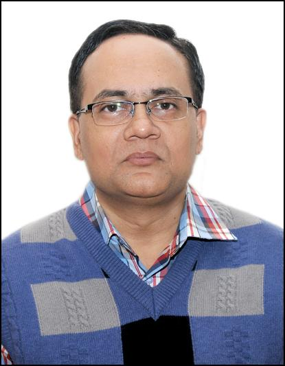
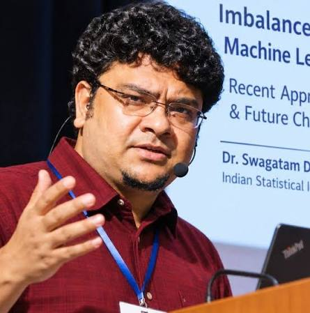
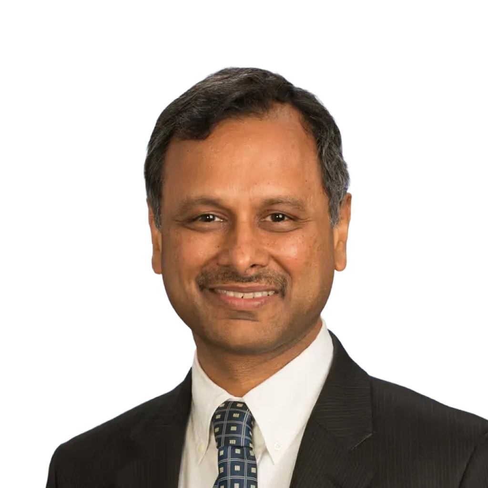
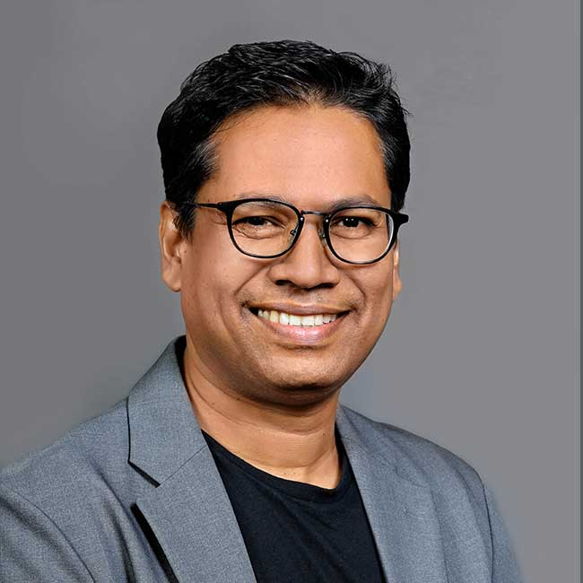

Vision
To foster a globally connected multidisciplinary Artificial Intelligence research ecosystem that advances scientific discovery, encourages technological innovation and enables intelligent solutions to complex real-world challenges.
Research Excellence. Industry Relevance. Intelligent Futures.
MIWAI 2027 marks the 20th edition of the Multi-Disciplinary International Conference on Artificial Intelligence, bringing together distinguished researchers, academicians, industry leaders, entrepreneurs, research scholars and technology innovators from across the world.
Hosted by CVR College of Engineering, Hyderabad, India, the conference provides an international platform for presenting pioneering research, exploring emerging AI paradigms and fostering meaningful collaborations across disciplines.
Artificial Intelligence is rapidly evolving beyond conventional machine learning towards foundation models, generative intelligence, autonomous agents and increasingly intelligent systems. MIWAI 2027 aims to advance this evolution through research that combines theoretical foundations, methodological innovations and real-world applications.
Celebrating two decades of multidisciplinary AI research, this edition places special emphasis on connecting academic excellence with industrial innovation and technological advancement.
Present your research. Showcase your innovation. Build collaborations. Shape the future of AI.
Established in 2007 at Mahasarakham University, Thailand, MIWAI has evolved into an international forum for multidisciplinary research in Artificial Intelligence.
Over the years, the conference has brought together researchers, academicians and practitioners from diverse backgrounds to present original contributions, exchange ideas and explore emerging directions in AI.
Its association with Springer's Lecture Notes in Artificial Intelligence (LNAI) series reflects its continuing commitment to scholarly research and international knowledge dissemination.
The 20th edition returns to Hyderabad, India, where the international conference journey and Springer proceedings milestone began in 2011.
MIWAI 2027 celebrates this journey while looking towards the next generation of AI research, innovation and industrial applications.
To foster a globally connected multidisciplinary Artificial Intelligence research ecosystem that advances scientific discovery, encourages technological innovation and enables intelligent solutions to complex real-world challenges.
MIWAI 2027 will feature distinguished researchers whose contributions have significantly influenced contemporary Artificial Intelligence.

Indian Institute of Science (IISc), Bengaluru, India

Indian Statistical Institute (ISI), Kolkata, India
Their keynote addresses will provide insights into emerging research challenges, advanced computational methodologies and future directions in Artificial Intelligence.
MIWAI 2027 is engaging with prominent academic and industry leaders to bring strong research and industrial perspectives to the conference.

Google AI

AI Researcher
Indian Institute of Technology Madras, India
Further announcements will be made following confirmation.
MIWAI 2027 welcomes original research contributions across the theoretical foundations, emerging methodologies, technologies and multidisciplinary applications of Artificial Intelligence.
The conference encourages contributions that advance established AI paradigms while exploring emerging directions in intelligent systems, autonomous decision-making and scientific discovery.
12 research tracks
Machine learning theory, statistical learning, deep learning, representation learning, self-supervised learning, transfer learning, continual learning, meta-learning, Bayesian learning, causal learning, reinforcement learning, evolutionary computation and computational intelligence.
Large Language Models, foundation models, multimodal foundation models, generative architectures, diffusion models, model adaptation, mixture-of-experts, Retrieval-Augmented Generation, long-context learning, memory-augmented models and multilingual AI.
Agentic AI architectures, tool-using agents, autonomous workflows, multi-agent collaboration, agent planning and orchestration, agent memory, self-improving agents, multi-agent reinforcement learning, human-agent collaboration and trustworthy autonomous agents.
Symbolic AI, knowledge representation, knowledge graphs, neuro-symbolic learning, automated reasoning, mathematical reasoning, causal reasoning, commonsense reasoning, probabilistic reasoning, graphical models, formal verification and reasoning under uncertainty.
Computer vision, multimodal learning, vision-language models, image and video understanding, visual generation, 3D vision, scene understanding, visual grounding, medical image analysis, remote sensing and robust visual perception.
Natural language processing, speech recognition and synthesis, conversational AI, information extraction, intelligent document processing, semantic search, information retrieval, multilingual NLP, question answering, text analytics and knowledge-intensive language systems.
Explainable AI, interpretable machine learning, AI safety, fairness, accountability, adversarial learning, privacy-preserving AI, robustness, reliability, hallucination detection, AI alignment, model security and responsible AI governance.
Distributed machine learning, federated learning, edge AI, TinyML, efficient inference, hardware-aware AI, AI accelerators, green AI, model compression, cloud AI, scalable deployment, MLOps, LLMOps and AI engineering.
Embodied intelligence, intelligent robotics, robot learning, autonomous navigation, trajectory prediction, motion planning, human-robot interaction, autonomous transportation, digital twins, world models, swarm intelligence and safe autonomous systems.
Medical AI, intelligent diagnosis, medical imaging, clinical decision support, clinical NLP, clinical RAG, biomedical knowledge graphs, drug discovery, computational biology, genomics, precision medicine and trustworthy healthcare AI.
AI for scientific discovery, materials science, computational chemistry, engineering design, industrial automation, intelligent manufacturing, predictive maintenance, process optimisation, industrial computer vision, supply-chain intelligence, digital twins and engineering simulation.
Precision agriculture, crop monitoring, plant disease detection, climate modelling, environmental intelligence, renewable energy, disaster prediction, smart cities, AI in education, financial intelligence, AI for social good and computational social sciences.
The tracks represent broad thematic directions and are not restrictive. Interdisciplinary contributions and research addressing emerging AI challenges are welcome.
MIWAI 2027 invites original research contributions from researchers, academicians, industry professionals and research scholars across the world.
We welcome theoretical advances, novel algorithms, methodological innovations, experimental investigations and application-oriented research addressing contemporary challenges in Artificial Intelligence.
Submissions should demonstrate originality, technical rigour, scientific significance and relevance to the conference themes.
All submissions will undergo a rigorous peer-review process. Acceptance and publication will be subject to the conference's review and publication requirements.
Proceedings: Springer Lecture Notes in Artificial Intelligence (LNAI) – approved for MIWAI 2027.
Conference-specific submission portal and detailed author guidelines: to be announced.
View research tracks Contact organisers| Activity | Date |
|---|---|
| CFP Release | 06-Dec-26 |
| Initial Paper Submission Deadline | 02-May-27 |
| Extended Submission Deadline | 16-May-27 |
| Extended Submission Deadline (Hard Deadline) | 30-May-27 |
| Review Period | 30 May – 6 July 2027 |
| Acceptance Notification | 09-Jul-27 |
| Camera-Ready Paper Submission | 18-Jul-27 |
| Author Registration Deadline | 23-Jul-27 |
| Final Proceedings Preparation | 17–25 July 2027 |
| Proceedings Submission to Springer | 25-Jul-27 |
| Springer 60-Day Cutoff | 26-Jul-27 |
| MIWAI 2027 Conference | 16–18 September 2027 |
Dates shown are from the detailed CFP schedule in the supplied document. The general Important Dates section still lists several milestones as to be announced; the schedule should be confirmed before publication.
MIWAI 2027 aims to extend the traditional boundaries of an academic conference by creating opportunities for sustained engagement among universities, research institutions, established industries, startups and technology innovators.
Artificial Intelligence is creating new opportunities across healthcare, manufacturing, agriculture, finance, transportation, scientific research and enterprise technology. Addressing these challenges requires stronger connections between academic research, industrial experience and entrepreneurial innovation.
We therefore invite proposals from academic institutions, research groups, industry organisations, startups and technology companies to actively collaborate with MIWAI 2027.
Our objective is to make MIWAI a platform not only for presenting research, but also for identifying research opportunities, addressing industry challenges, showcasing innovations and building long-term collaborations.
Call for Collaboration and Partnership Proposals
We invite proposals under the following categories.
Academic institutions, research laboratories, industry R&D teams and domain experts are invited to propose special tracks focusing on emerging and interdisciplinary areas of Artificial Intelligence.
Special tracks provide an opportunity to bring together focused research communities around specific themes that complement the main conference programme.
Proposals may address:
Emerging research paradigms in Artificial Intelligence.
Domain-specific AI applications.
Industry-driven research challenges.
Interdisciplinary AI research.
Specialised applications in healthcare, agriculture, manufacturing, finance and scientific research.
Emerging directions in Agentic AI, Generative AI, trustworthy AI and autonomous systems.
Proposal format: Track title, motivation, scope, topics of interest, proposed organisers and their affiliations, and a brief description of the intended research community.
Selected proposals will be integrated into the MIWAI 2027 technical programme, subject to approval by the Program Committee.
Enquire about this opportunityUniversities, academic departments, research centres and laboratories are invited to explore collaborative research initiatives with MIWAI 2027.
Potential areas of collaboration include:
Joint research initiatives and collaborative projects.
Research networking and international academic partnerships.
Joint workshops and specialised technical sessions.
Interdisciplinary research programmes.
Research scholar interaction and mentoring initiatives.
Opportunities for institutional partnerships and future academic collaboration.
We particularly encourage proposals that bring together researchers from multiple disciplines and institutions to address emerging AI research challenges.
Enquire about this opportunityWe invite established industries, corporate R&D organisations and technology companies to participate in MIWAI 2027 and contribute to its research and technical programme.
Organisations are encouraged to propose:
Industry keynote addresses and expert technology talks.
Industry-led special tracks and technical sessions.
Real-world AI problem statements for research engagement.
Industry-academia research interaction sessions.
Technology demonstrations and product showcases.
Collaborative R&D initiatives.
Discussions on AI adoption, deployment and scalability.
We particularly welcome industry perspectives on the practical challenges of deploying Generative AI, Agentic AI, foundation models and intelligent automation in production environments.
Enquire about this opportunityMIWAI 2027 welcomes startups, technology ventures and emerging entrepreneurs working in Artificial Intelligence and related technologies.
The conference intends to provide a platform for startups to demonstrate their innovations, interact with researchers and industry leaders, and explore opportunities for technological collaboration.
Startups are invited to propose:
AI product and solution demonstrations.
Research-driven startup showcases.
Proof-of-concept and prototype demonstrations.
Generative AI and Agentic AI applications.
Healthcare, agricultural and industrial AI innovations.
Startup presentations and technology pitches.
Collaborative product development and research initiatives.
Selected startups will have opportunities to present their innovations to an international audience comprising researchers, academicians, industry professionals and technology experts.
Enquire about this opportunityResearchers, academic institutions and industry experts are invited to propose workshops and tutorials on emerging AI technologies, advanced methodologies and practical applications.
We particularly welcome proposals addressing:
Agentic AI and multi-agent systems.
Large Language Models and Retrieval-Augmented Generation.
Multimodal foundation models.
Trustworthy and responsible AI.
AI for scientific discovery.
AI in healthcare and engineering.
Autonomous systems and embodied intelligence.
Emerging AI tools, frameworks and platforms.
Workshops and tutorials will provide focused opportunities for knowledge exchange, technical discussions and hands-on learning.
Enquire about this opportunityWe invite technology companies, corporate organisations, startups, research institutions and other interested organisations to partner with MIWAI 2027 through sponsorships and strategic partnerships.
Sponsorships will support the conference's research programme, international participation, student research initiatives, industry engagement and innovation activities.
Potential partnership opportunities include:
Title and principal sponsorship.
Platinum, Gold and Silver sponsorships.
Conference and technical programme sponsorship.
Keynote and invited-talk sponsorship.
Industry exhibition and technology showcase partnerships.
Workshop and special-track sponsorship.
Student research awards and innovation prizes.
Travel support and student participation initiatives.
Startup and innovation showcase partnerships.
A detailed sponsorship proposal outlining partnership categories, benefits and participation opportunities will be made available separately.
We welcome organisations interested in supporting high-quality AI research and strengthening the international research ecosystem.
Enquire about this opportunityAs part of its 20th edition, MIWAI 2027 intends to bring together academic researchers, industry experts, startups and research institutions through focused interaction opportunities.
The proposed Collaboration Forum will encourage:
Discussions between academic researchers and industry practitioners on emerging technological challenges.
Opportunities for companies to present practical challenges that can motivate academic research and collaborative solutions.
A platform for startups to demonstrate AI products, prototypes and emerging technologies.
Opportunities for researchers from different institutions and disciplines to identify shared research interests.
Showcasing emerging AI applications, research prototypes and technology solutions.
Facilitating discussions on joint projects, institutional collaborations and sustained academic-industry engagement.
These initiatives aim to make MIWAI 2027 a platform where research discussions can lead to collaborative projects, innovative solutions and meaningful technological outcomes.
We invite interested organisations and individuals to contribute to MIWAI 2027 through research, innovation and partnership initiatives.
Proposals are welcome from:
All proposals will be considered by the MIWAI 2027 Organising Committee based on:
Special track and workshop proposals will additionally be evaluated for their research scope, organiser expertise and potential to attract quality contributions.
Interested in collaborating? We invite you to share your proposal with the MIWAI 2027 Organising Committee.
Contact the organising committeeMIWAI 2027 has received approval for publication of its conference proceedings in Springer's Lecture Notes in Artificial Intelligence (LNAI) series.
The Springer LNAI series provides an established international publication platform for research contributions in Artificial Intelligence and related disciplines.
MIWAI has maintained a strong association with Springer proceedings, reflecting its commitment to quality research and international scholarly dissemination.
An important achievement associated with MIWAI has been the publication of conference proceedings on the day of the conference.
This reflects the conference's emphasis on timely dissemination of research and efficient publication workflows.
All submissions will undergo rigorous peer review. Publication will be subject to acceptance, completion of the required formalities and the publisher's final approval.
Indexing in bibliographic databases is subject to the respective agencies' evaluation and policies.
Be part of two decades of international multidisciplinary AI research.
Interact with internationally recognised researchers and invited technology leaders.
Publish accepted research through an established international proceedings platform.
Explore Agentic AI, Generative AI, foundation models, multimodal intelligence and trustworthy AI.
Engage with corporate R&D teams, industry practitioners and technology leaders.
Present innovative AI products, prototypes and research-driven solutions.
Participate in focused research communities addressing emerging AI challenges.
Explore international institutional and academic-industry collaborations.
Discover new applications and emerging technologies across multiple disciplines.
Additional organising committees will be announced.
Established in 2001, CVR College of Engineering is a leading engineering institution located in Hyderabad, Telangana, India.
The institution is committed to excellence in engineering education, research and technological innovation. With an active academic and research environment, experienced faculty and a growing network of institutional and industry collaborations, CVR provides an ideal setting for an international conference of this stature.
Hosting the 20th edition of MIWAI reflects CVR's commitment to promoting advanced research, encouraging interdisciplinary collaboration and strengthening the global Artificial Intelligence research ecosystem.
Conference Venue
CVR College of Engineering
Vastunagar, Mangalpalli (V), Ibrahimpatnam (M)
Ranga Reddy District, Telangana – 501510, India

Photographs from the original CVR College of Engineering conference website. Select an image to view it in full.
 Canada
Canada Germany
Germany India
India Italy
Italy Korea
Korea Malaysia
Malaysia Norway
Norway Philippines
Philippines Qatar
Qatar Russia
Russia Saudi Arabia
Saudi Arabia South Africa
South Africa Sweden
Sweden Tanzania
Tanzania Tunisia
Tunisia United Arab Emirates
United Arab Emirates United Kingdom
United Kingdom Usa
UsaMIWAI 2027 welcomes researchers, academicians, industry leaders, startups and innovators to contribute to the next chapter of Artificial Intelligence.
We invite you to go beyond participation and become an active contributor to the conference.
Submit your research. Propose a special track. Share an industry challenge. Showcase your innovation. Build research partnerships. Support emerging AI research.
MIWAI 2027 – Research Excellence. Industry Relevance. Intelligent Futures.
September 2027 | Hyderabad, India
Hosted by CVR College of Engineering.
Explore collaborationCVR College of Engineering
Vastunagar, Mangalpalli (V), Ibrahimpatnam (M)
Ranga Reddy District, Telangana – 501510, India
For enquiries concerning research submissions, conference participation, special tracks, workshops, industry collaboration, startup participation and sponsorships, please contact the MIWAI 2027 Organising Committee.
Email: To be announced
Raghava M · 9848096238 · raghava.m@cvr.ac.in
Suhail Afroz · 9700536534 · suhailafroz@cvr.ac.in